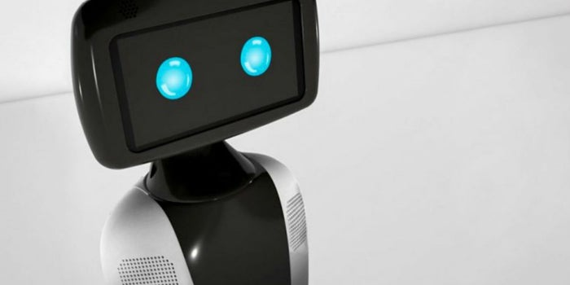

Creado con tecnología de punta y bajo los principios de internet de las cosas, RoomieBot llega a México para ser tu mejor aliado, no solo en tu hogar sino también en tu empresa. Es el primer robot comercial mexicano, un asistente para apoyarte en tu vida diaria.
¿Recuerdas a Robotina? ¿y a R2D2? - Roomie Bot es el primer robot comercial y es 100% mexicano. Cuenta con movimiento autónomo gracias a la detección de obstáculos e incluye control de dispositivos inteligentes, reconocimiento facial y cuidado de la salud.
Roomie Bot puede ayudarte con las labores cotidianas del hogar, como apoyarte con tu agenda personal, mantener segura tu casa, solicitar un Uber o pedir comida.
Con RoomieBot ahora puedes tener tu casa inteligente; tienes la opción de controlar focos, contactos de luz, sensores de puertas y ventanas, cerraduras, termostatos persianas, televisiones y demás.
RoomieBot se conecta a tus cuentas personales, como tus redes sociales o tu agenda del día. Gracias a su interfaz basada en comandos de voz, con una simple orden sabrás la información que deseas.
¿Quieres relajarte a gusto cuando llegas a casa? o ¿Te gusta escuchar tus canciones favoritas por las mañanas?. RoomieBot puede hacerte la vida más cómoda, ya que cumple instrucciones tan sencillas como “Prende la televisión del cuarto” o “Reproduce mi Playlist de Spotify”.
Si estudias, investigas o simplemente te encanta conocer más del mundo, RoomieBot te ayuda a hacerlo divertido. Gracias a su conexión con el buscador Google puedes hacerle cualquier pregunta. ¿Tienes mucha tarea? o ¿Quieres saber qué fue la Revolución Mexicana?, solo pregúntale a RoomieBot.
¿Quién supervisar a tus hijos, o estar al tanto del estado de salud de los adultos mayores? gracias a su conexión con “wearables”, Roomie monitorea las condiciones de salud de nuestros seres queridos, mientras que con los sensores de posición, puedes saber si alguien está en condiciones normales. Si no es así, emitirá una alerta.
RoomieBot cuenta con un sistema de seguridad que integra: control de puertas, reconocimiento facial, patrullaje y sistema de notificaciones y/o alertas. Puede cuidar tu casa por ti y tu puedes verlo todo cómodamente desde tu celular. En caso de peligro espera recibir las notificaciones pertinentes.
Para mas informacion:
Robots AsistentesContactate con nosotros a este numero: 644-505-2139